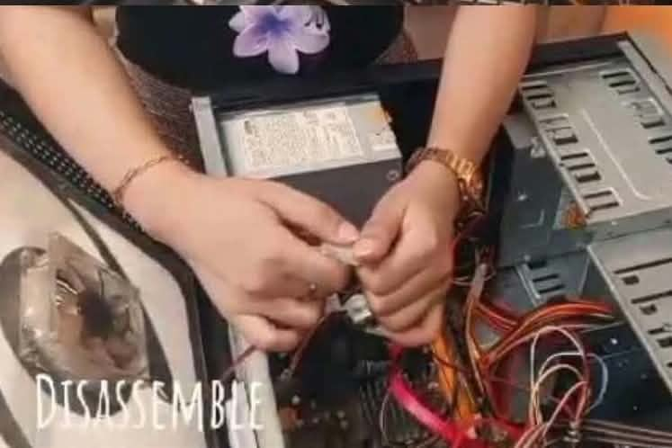

Desktop Computer Disassembly at Southern de Oro Philippines College
This project demonstrates the proper disassembly of a desktop computer by removing and identifying its internal components. It aims to develop students’ practical skills in computer hardware handling, maintenance, and troubleshooting. View project